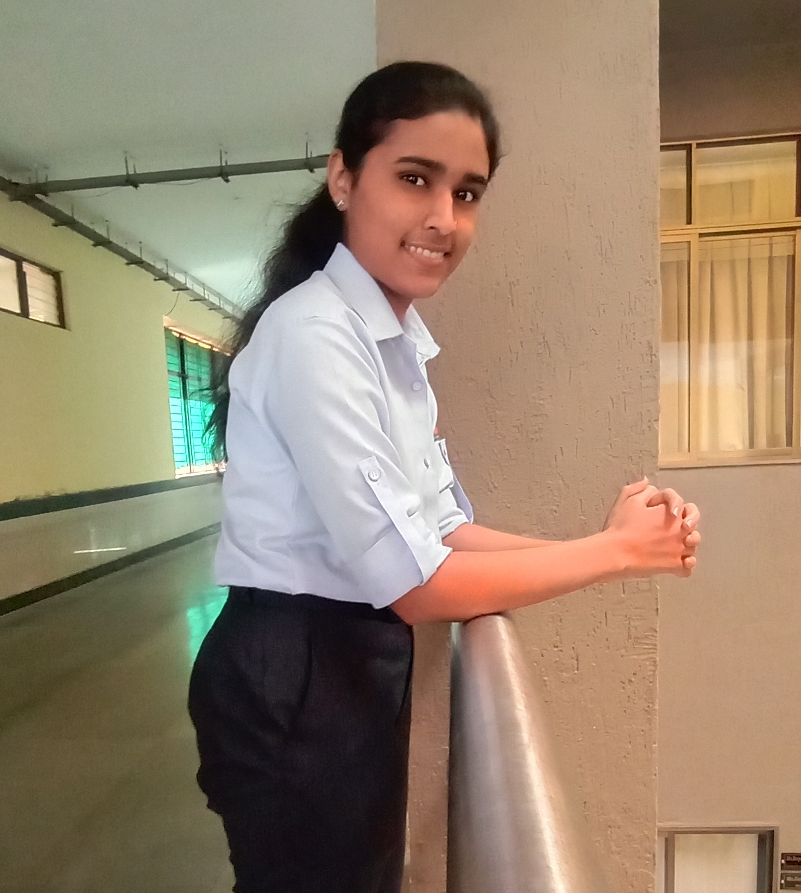

About-Us
I'm Shraddha, and I'm absolutely thrilled to have you here on my photography journey.Based in the picturesque city of Satara, Maharashtra, India, I've always been enchanted by the mesmerizing beauty that surrounds us. From the breathtaking landscapes to the genuineemotions captured in single frame, photography has become my way of expressing the world's wonders. With every click of my camera, I aim to freeze those fleeting moments and transform them into timeless memories. Whether it's the vibrant colors of nature, the candid smiles of loved ones, or the intricate details of everyday life, I'm dedicated to capturing the essence of every subjectI encounter.hrough the lens, I strive to tell captivating stories that evoke emotions and transport you to another world. So join me on this visualadventure as we embark on a journey of exploration and discovery. Together, let's celebrate the beauty of life, one frame at a time. Thank you for being a part of my photography passion!


"Welcome to the enchanting world of Shraddha Artistry, where nature's beauty dances through the lens of our camera! Immerse yourself in a visual symphony of breathtaking landscapes, vibrant wildlife, and serene moments captured in time. Each photograph is a brushstroke of Mother Nature's masterpiece, lovingly crafted to evoke wonder and awe. Join us on this artistic journey, where every click tells a story, and every image whispers the secrets of the natural world. Let Shraddha Artistry be your window to the soul of nature. Explore, dream, and discover the magic of our planet through the lens of our artistry."